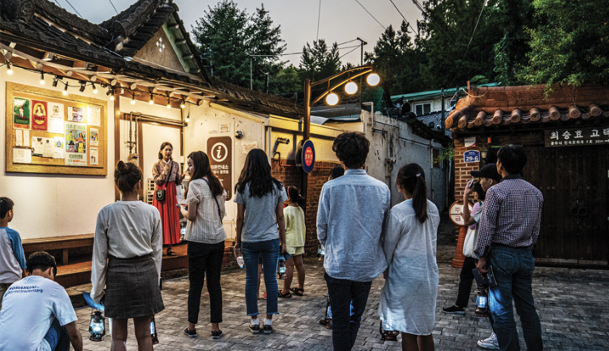

문화가 있는 날이란
문화가 있는 날이란
문화가 있는 날은 국민이 일상에서 문화를 쉽게 접할 수 있도록 매달 마지막 수요일(해당 주간 포함)에 다양한 문화혜택을 제공하는 날입니다. 문화가 있는 날에는 영화관, 공연장, 박물관, 미술관, 문화재 등 전국의 2천여 개 문화시설을 할인 또는 무료로 즐길 수 있습니다.
또한 지역문화 콘텐츠 특성화, 청춘마이크, 동동동 문화놀이터, 직장 문화배달 등 다양한 기획 사업을 통해 민간단체와 협력하고 국민 문화 향유권 확대를 위해 노력하고 있습니다.
'문화가 있는 날'에 참여하는 영화관, 스포츠시설, 공연장, 미술관, 박물관, 문화재, 도서관에서 할인 또는 무료입장이 가능합니다. 더불어 직장인도 퇴근 후 이용이 가능하도록 일부 문화시설은 야간개방을 합니다.
- 전국 주요 영화관 할인
- CGV·롯데시네마·메가박스 등
- 오후5시~9시, 5,000원
- 도서대출권수 확대
- 특별프로그램 운영
- 프로스포츠 할인 및 특별 이벤트